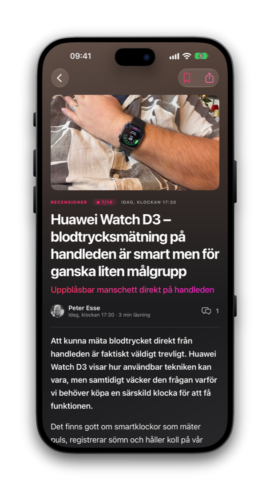
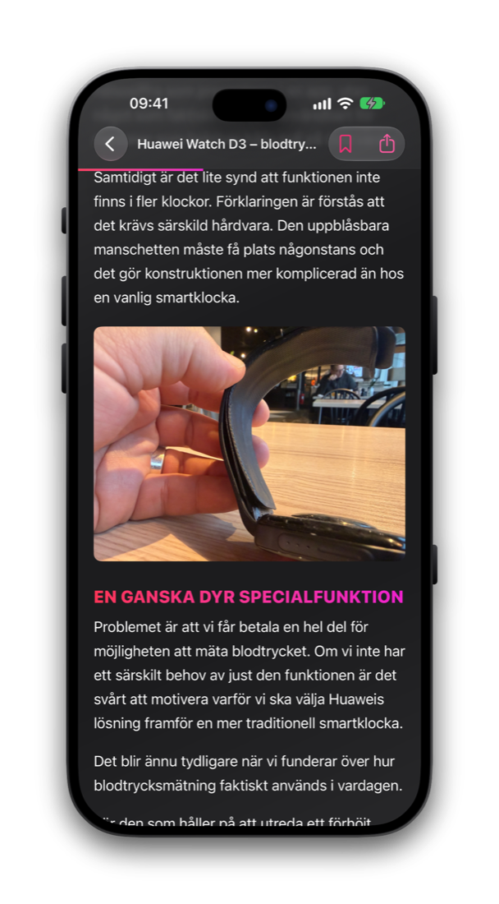

Teknik. Livet. Allt däremellan.
Teknikveckan.
I fickan.
Artiklar, recensioner med betyg och forumet Bubblan. Samlat i en app som är byggd för iOS 26.
Allt från Teknikveckan.
Och Bubblan.



Hem
Din dos av teknik.
Senaste nytt från teknikveckan.se i den mörka mobildesignen, med de senaste recensionerna överst och en kategorivy för att hitta rätt.
Recensioner
Recensioner med betyg.
Direkt från teknikveckan.se, med betyget först och artikeln under.
Läsvyn
Gjord för att läsas.
Stora rubriker, ren text och bilder som får plats. Spara artiklar i Sparat, sök bland dem och hoppa direkt till diskussionen i forumet. Länkar till teknikveckan.se öppnas i appen.
Recensionsruta
Betyget först. Sedan detaljerna.
Recensionsrutor med fördelar, nackdelar, fakta och betyg ligger mitt i artikeln, så du ser vad som talar för och emot innan du bestämmer dig.

Allt från teknikveckan.se och Bubblan, samlat på ett ställe.
Bubblan
Forumet följer med.
Hela Teknikbubblan i samma app. Läs, svara och håll koll på det som händer.
Senaste ämnen och kategorier.
Bläddra bland senaste ämnen med oändlig scrollning, välj kategori eller sök.
Rikt innehåll.
Länkar, bilder, citat och kod visas som de ska.
Gilla, svara, skapa.
Gilla inlägg, svara i trådar och starta nya ämnen.
Meddelanden.
Privata meddelanden och aktivitet på ett ställe.
Missa inget.
Notiser och en aktivitetsflik som visar vad som hänt.
Din läslista.
Spara artiklar med ett tryck och läs dem när det passar.
Byggd för iOS 26 och iPhone Duo.
Liquid Glass i tabbfältet och i knapparna. Innehållet håller sig undan vecket och kameran på iPhone Duo.
Hämta Teknikveckan.
Appen testas just nu i en öppen beta. Krav: iPhone eller iPad med iOS 26 eller senare.
Skärmbilderna visar innehåll från teknikveckan.se.